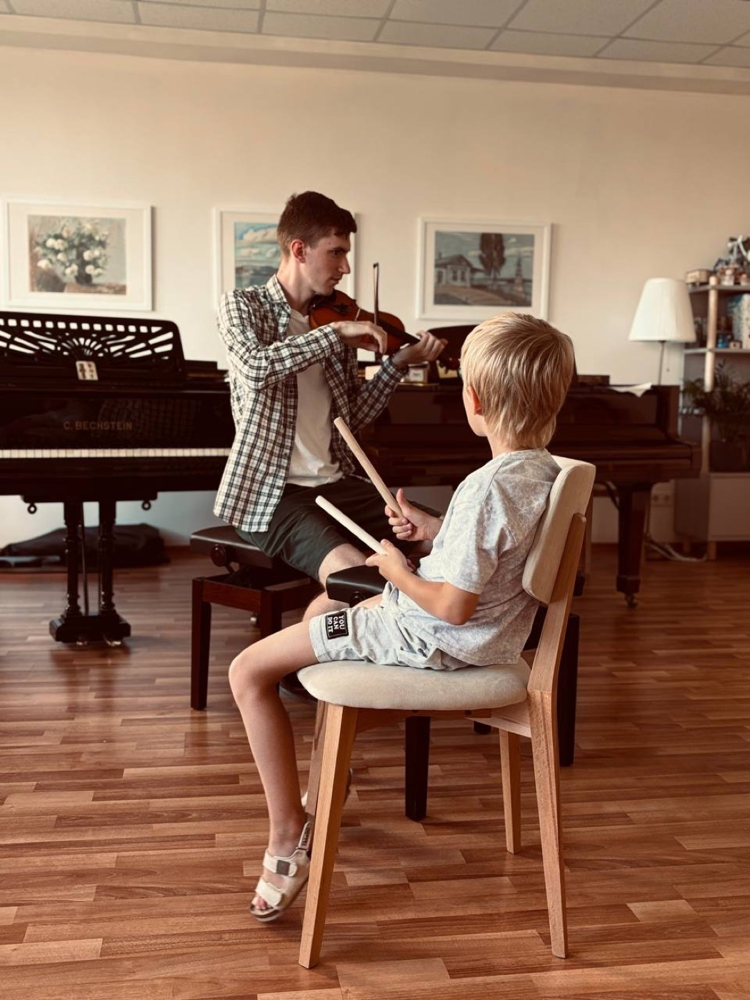

Ильина Марина Рэмовна
Фортепиано
Фортепиано для детей и подростков. 25+ лет практики, мягкий и внимательный подход.

Преподаватели Московской консерватории, РАМ им. Гнесиных, ГИТИСа и ВГИКа. Нажмите на фотографию — откроется биография, расписание и запись на урок.
Кнопка «Записаться» ведёт в систему «Мой класс» — там видно свободное время педагога.
Профессора ведущих музыкальных вузов страны проводят открытые занятия и творческие встречи для наших учеников.
Видео открывается прямо на сайте, без перехода на Rutube.
Оставьте имя и телефон — мы перезвоним, расспросим о ребёнке и предложим педагога, который подойдёт по возрасту, характеру и целям.
Два поля — и мы свяжемся с вами в ближайшее рабочее время.
Актуальные группы и свободное время — напрямую из системы «Мой класс».
Заполните два поля — остальное уточним по телефону.